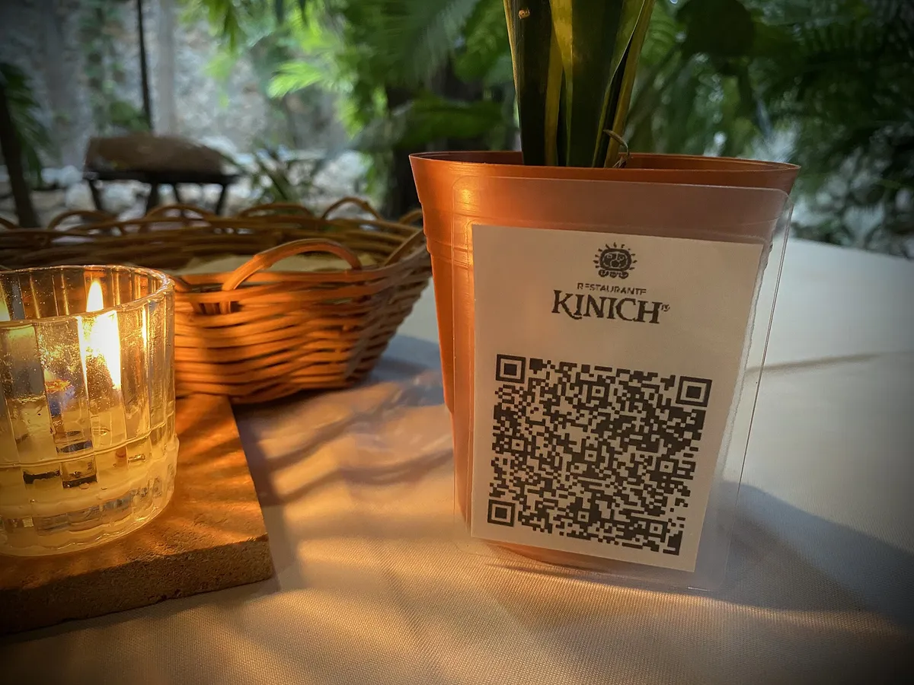

NFC vs. código QR: diferencias, ventajas y cuál conviene a tu negocio
Comparativa entre NFC y código QR: cómo funcionan, velocidad, compatibilidad y costo, y por qué conviene usar los dos juntos en tu negocio.

En resumen
- El QR se lee con la cámara de cualquier celular; el NFC con un simple toque, sin abrir apps.
- El NFC es más rápido y cómodo; el QR funciona en más equipos, incluso sin NFC.
- Lo ideal para un negocio es combinar ambos en la misma tarjeta: nadie se queda fuera.
- En los dos casos, lo importante es que el enlace lleve directo a la acción (reseñar, seguir, escribir).
Contenido del artículo
Desde 2020 los códigos QR se volvieron parte del paisaje en México: menús de restaurantes, pagos, boletos y hasta trámites. Al mismo tiempo, el NFC llegó a nuestras vidas con los pagos sin contacto. Ambos sirven para lo mismo en un negocio: llevar al cliente del mundo físico a un enlace en segundos. Pero funcionan distinto, y conocer sus diferencias te ayuda a elegir bien.
Qué es un código QR
El código QR (Quick Response) es un código de barras bidimensional creado en 1994 por Denso Wave, una empresa japonesa del grupo Toyota, para rastrear piezas en las líneas de producción. La empresa decidió no ejercer sus derechos de patente, lo que permitió que cualquiera lo usara libremente; puedes leer su historia en QRcode.com. Hoy se lee con la cámara de prácticamente cualquier celular.
Qué es NFC
NFC (Near Field Communication) es una tecnología inalámbrica de muy corto alcance estandarizada por el NFC Forum. Un chip dentro de la tarjeta guarda un enlace y lo transmite cuando el celular se acerca a pocos centímetros, sin batería. Lo explicamos a detalle en qué es una tarjeta NFC y cómo funciona.
Comparativa: NFC vs. código QR
| Característica | NFC | Código QR |
|---|---|---|
| Cómo se usa | Acercar el celular a la tarjeta | Abrir la cámara, enfocar y tocar el aviso |
| Pasos para el cliente | 1 | 3 o más |
| Velocidad | Menos de un segundo | Unos segundos (depende de la luz y la distancia) |
| Compatibilidad | iPhone XS o posterior y la mayoría de Android con NFC activado | Cualquier celular con cámara |
| Funciona con poca luz | Sí | Con dificultad |
| Distancia | 1 a 4 cm aproximadamente | Depende del tamaño impreso |
| Se puede imprimir en papel | No, requiere un chip | Sí, en cualquier superficie |
| Costo | Mayor (incluye chip) | Muy bajo |
| Percepción | Novedosa, «wow» | Conocida y familiar |
Ventajas del NFC
- Menos fricción: un solo gesto. En iPhone XS y posteriores la lectura es automática con la pantalla encendida, según la documentación de Apple.
- Funciona en cualquier iluminación: ideal para bares o terrazas de noche.
- Experiencia memorable: el «toca aquí» despierta curiosidad y genera conversación.
- Más difícil de suplantar: alguien puede pegar un QR falso encima del tuyo con una calcomanía; con NFC es menos sencillo.
Ventajas del código QR
- Universal: funciona con cualquier celular con cámara, aunque no tenga NFC o lo tenga apagado.
- Económico y flexible: se imprime en tickets, carteles, empaques y lonas.
- A distancia: un QR grande en un cartel se escanea a varios metros.
- Familiar: la mayoría de las personas ya sabe usarlo.
La mejor opción: NFC y QR juntos
No tienes que elegir. Una tarjeta con chip NFC y código QR impreso combina lo mejor de ambos: el cliente con un celular moderno toca y listo; el que no tiene NFC activado escanea el código. Nadie se queda fuera. Así son todas las tarjetas de TarjetasNFC, como la tarjeta de reseñas de Google o la de Wi‑Fi.
¿Cuándo usar cada uno?
| Situación | Recomendación |
|---|---|
| Mostrador, caja o recepción | Tarjeta NFC + QR |
| Mesas de restaurante | Tarjeta NFC + QR en un portatarjetas |
| Tickets, facturas y bolsas de entrega | QR impreso |
| Carteles y lonas en exterior | QR de buen tamaño |
| Eventos, ferias y networking | Tarjeta NFC + QR |
Cuidado con los QR «dinámicos» de suscripción
Muchos generadores en línea crean QR dinámicos que pasan por su servidor antes de llegar a tu enlace. Funcionan mientras pagas la suscripción; si la cancelas, el código deja de servir y tus materiales impresos quedan inútiles. Para un negocio, lo más seguro es un QR que apunte directamente a tu enlace final.
Conclusión
El QR es universal y barato; el NFC es más rápido y memorable. Juntos son la forma más completa de convertir a cada cliente que pasa por tu negocio en una reseña, un seguidor o una conversación. Si quieres verlo funcionar, mira cómo funcionan nuestras tarjetas.
Preguntas frecuentes
¿Qué es mejor, NFC o QR?
Depende del cliente. El NFC es más rápido (solo se acerca el celular), pero no todos los teléfonos lo tienen activado. El QR funciona con cualquier cámara, pero exige abrirla y enfocar. Por eso conviene una tarjeta con los dos.
¿El código QR caduca?
Un QR estático (que contiene el enlace directamente) no caduca. Algunos generadores en línea crean QR dinámicos que dependen de su servicio y pueden dejar de funcionar si cancelas la suscripción.
¿Se puede leer un NFC a través de una funda?
Normalmente sí, si la funda es delgada y no es metálica. Las fundas gruesas, con placas metálicas o imanes pueden impedir la lectura.
Fuentes y referencias
- History of QR Code — DENSO WAVE (QRcode.com)
- NFC Forum — NFC Forum
- Adding support for background tag reading — Apple Developer Documentation
- Near field communication (NFC) overview — Android Developers
- Encuesta Nacional sobre Disponibilidad y Uso de Tecnologías de la Información en los Hogares (ENDUTIH) 2024 — INEGI
Las marcas mencionadas pertenecen a sus respectivos dueños. Las imágenes provienen de Wikimedia Commons y se usan según su licencia libre, indicada en cada pie de foto.

Diseñamos y programamos tarjetas NFC con código QR para negocios de todo México. Escribimos estas guías con base en la documentación oficial de Google, Apple y Android y en lo que aprendemos todos los días con nuestros clientes.
Contáctanos · Cómo funcionan nuestras tarjetas